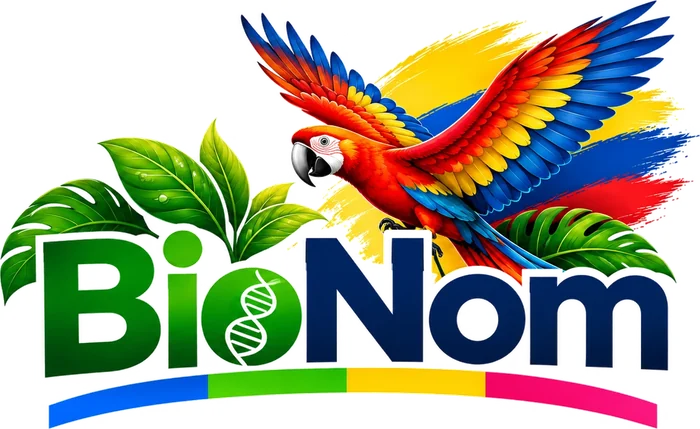

🌿 Biología · BachilleratoDe un átomo a toda la biosfera
La vida se organiza en niveles: cada uno se forma con piezas del nivel anterior y tiene propiedades nuevas que las piezas solas no tienen. Toca cualquier nivel del mapa para ver qué es, un ejemplo real y qué módulo de BioNom lo estudia.
Recorre los niveles con:
◆ Reto: ordena los niveles
Toca los niveles del más pequeño al más grande. Si te equivocas, la ficha tiembla y puedes volver a intentar.
◆ Módulos
Cada módulo explica con figuras que se tocan, explicaciones paso a paso, chequeos rápidos y narración en voz alta. Al final de todos, el Juego repasa todo lo visto.